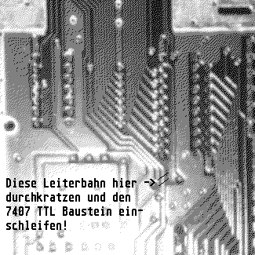

Previous
Next
TOC
Warum ist der Festplattenbetrieb bei abgeschaltetem Laserdrucker
incl. Laserdruckerinterface SLMC804 gestört?
Das SLMC804 hat eine ungepufferte INT-Leitung, obwohl diese Open
Collector sein sollte. Aus diesem Grund schafft es der Controller
nicht die Leitung auf Masse zu ziehen, was den DMA-Bus nachhaltig
stören kann. Die Leitung muß also aufgetrennt und mit einem Open
Collector Treiber TTL Baustein
7407, kein 74LS07!)
verstärkt werden.
Die INT-Leitung vom ACSI Kabel aus auf der Unterseite der Platine
verfolgen und an einer geeigneten Stelle durchkratzen dies wäre zum
Beispiel folgender Punkt auf der Platine wenn man ein Lineal anlegt:
4,7 cm vom linken und 7,7 cm vom oberen Platinenrand entfernt (die
durch zu kratzende Leiterbahn geht von Pin 32 des ICs in Steckplatz
U2 zu Pin 17 des J1 Platinensteckers (da wo das Kabel zum Rechner
aufgesteckt ist) und zu Pin 10 des ACSI Buchse.
Hier muß nun ein Gatter des 7407 TTL Bausteines eingelötet werden,
weiterhin darf natürlich nicht vergessen werden die Spannungsver-
sorgung des Bausteines sicher zu stellen. Die unbenutzen Eingänge
(also die PINs 1,3,5,9 und 11) des 7407 sind mit der Platinenmasse
(das silberne der Platine) zu verbinden um ein schwingen der unbe-
nutzten Gatter zu vermeiden. Den Pin 14 des 7407 ICs mit dem Pin 14
eines anderen ICs verbinden und den Pin 12 mit der Seite der aufge-
trennten Leiterbahn verlöten, die zur Anschlußbuchsenseite geht.
Den Pin 13 mit der Seite der aufgetrennten Leiterbahn verlöten die
nach vorne geht (zu der Gelben und Grünen Leuchtdiode an der Vorder-
seite) des SLMC804.
Hier das ganze nochmal bildlich gesehen:

weiterblättern
Kapitel Die Wartung und Reparatur der Laserdrucker, Seite 7